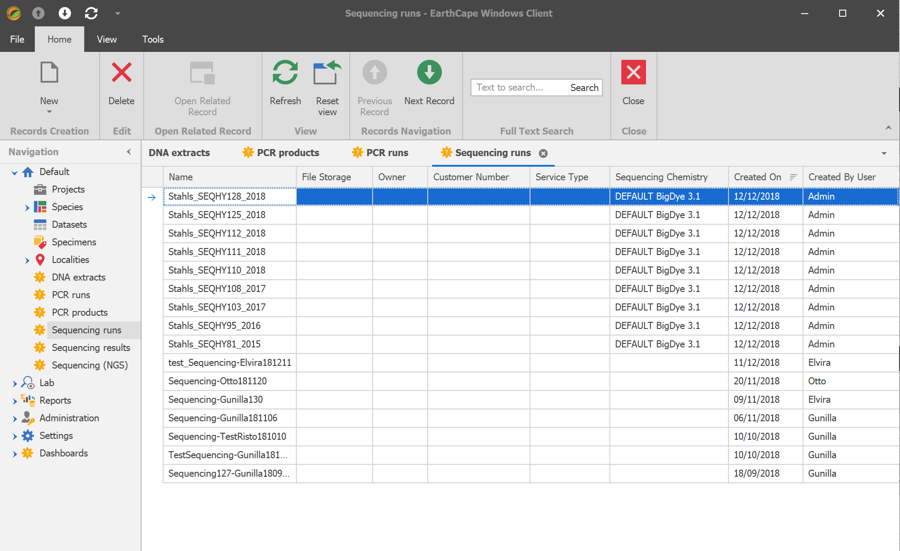

Molecular Laboratory Module
EarthCape Laboratory Module is designed with the idea to make it convenient to manage laboratory information and samples linked with field data and natural history collection management routines.
Views are configured in such a way that when working with "deeper" data down the processing pipeline "higher" level (e.g. field samples) fields are visible as well.
Major advantages over traditional LIMS:
- All views can be reconfigured using built-in Application Model editing tools, both from the user specific views directly or using centralized application model editor.
- Fully integrates with the rest of EarthCape modules including collection/observation management, mapping, report designer, dashboards and others.
- Available in both Windows desktop standalone application that can be configured to work with a local database or a web based application available through the browser.
- Supports any database backend.
- Takes full advantage of dynamic data slicing by grouping, filtering, pivoting and charting.
- Integrates with BOLD API downloading sample data back to researcher's database.
Example setup
Class diagram
Collection samples (Units)
Creating DNA Extracts for selected units
DNA Extracts list (DnaExtact)
Adding extracts to a (new) PCR run
PCR runs (Amplification)
PCR run view with lab book tab
All PCR products from all runs (PcrDnaExtract)
Adding PCR product to a (new) sequencing run
Sequencing runs (SequencingRun)
